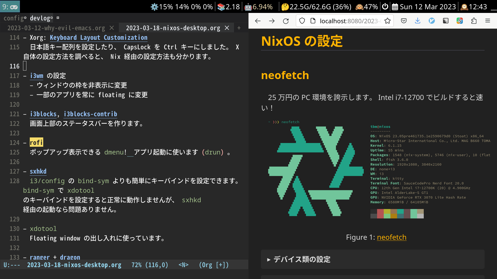
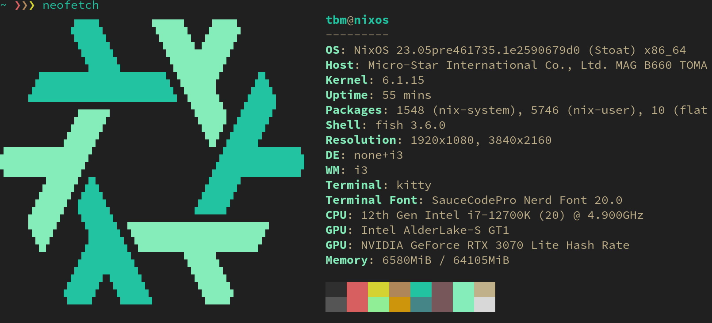
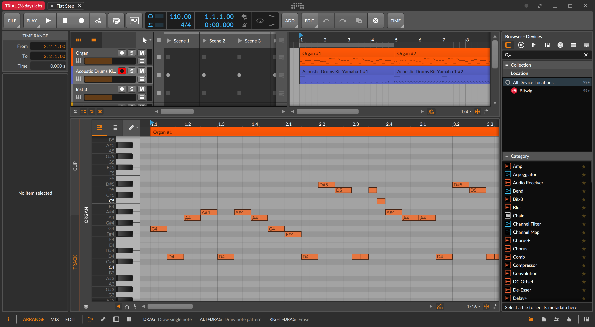

NixOS をメイン機として使えるようになりました。主な設定を紹介します。

背景
NixOS を minimal ISO image からインストールした場合、コンソール画面が立ち上がります。 GUI 環境の構築には、以下のような設定が必要です。
GUI 環境の選択
X Window System または Wayland を有効化して GUI ウィンドウを有効化します。
この選択はシステム全体の設定に影響する分岐点です。世の流れは Wayland に向かっていますが、未だハマり所が多そうなので、この記事では枯れた X を使用します。
WM / DE の導入
X の上には WM (window manager) や DE (desktop environment) を載せることができます。 WM を導入すると、ワークスペースなどの概念が利用できるようになります。 DE を導入すると、 WM の機能に加え、デバイス類の GUI や Dock が入ります。
DE に欠点があるとすれば、カスタマイズが難しくなることです。この記事では WM (i3wm) の上から DE に匹敵する環境を作っていきます。
NixOS の設定
neofetch
25 万円の PC 環境を誇示します。 Intel i7-12700 でビルドすると速い！

デバイス類の設定
まずはハード面を有効化します。
-
ネットワーク (Wifi)
NixOS manual に従って
network-managerを有効化しました。 - Nvidia driver フラグ ON で有効化しました。画面のちらつきがあり Troubleshooting の項も設定しました。虹色の輝きは抑えられていません。
-
Bluetooth NixOS の
bluetooth モジュールを有効化しました。
bluetooth-managerが GUI です。 Airpods Pro のペアリングが解けるようになって直せていません。 -
ディスプレイ
xrandrを毎回手動で走らせています。 DPI はモニタ固有の値のはずですが、なぜか DPI の設定が狂うので困ります。また DPI の値を変更すると、i3やブラウザ類のフォントサイズが変わります。 -
オーディオ sound が
alsaに相当します。 pulseaudio も設定しました。pavucontrolが GUI です。 TUI を探しています……
未だ完全な設定とは言えません。やはり DE を使うのが無難です。
基本設定
普通のデスクトップ環境へ近づけていきます。
- console X が起動していないときのフォントの設定です。 4K モニタを使っているので、フォントサイズを上げました。
-
Fonts
noto-fonts-cjkなどを入れます。 - XDG XDG パスの設定 、 mimeapp の設定 (ファイル種別とアプリの関連付け) を行いました。
-
mount / unmount 用コマンドと自動マウント
sudoでマウントすると一般ユーザがアクセスできなくなります。 udisksctrl でマウントすれば一般ユーザでもアクセスできます。 udiskie で自動マウントできるそうです。 -
日本語入力 (fctix,
fcitx-mozc) NixOSマシンを自分好みにカスタマイズする のおかげで設定できました。英字・日本語の切り替えは macOS と同様のキーバインディングにしています。
X11 + i3 + sxhkd
- Xorg: Keyboard Layout Customization X の設定方法を調べると、 Nix 経由の設定方法も分かります。日本語キー配列を設定したり、 CapsLock を Ctrl キーにしました。
-
i3wm の設定
- ウィンドウの枠を非表示に変更
- 一部のアプリを常に floating に変更
- i3blocks, i3blocks-contrib 画面上部のステータスバーを作ります。
-
rofi
ポップアップ表示できる
dmenu! アプリ起動に使います (drun) 。 -
sxhkd
i3/configのbind-symよりも簡単にキーバインドを設定できます。またbind-symでxdotoolのキーバインドを設定すると正常に動作しませんが、sxhkd経由の起動なら問題ありません。 -
xdotoolFloating window の出し入れに使っています (後述) 。
その他アプリ
-
flameshot,importスクリーンショットを取れるようにします。 -
ranger +
dragon
rangerは TUI のファイルビューワーで、画像のプレビューもできます。dragonで画像をプレビューすれば、ブラウザにドラッグ & ドロップすることもできます。 - Evince PDF 閲覧に利用します。
- mpv + mpv-file-browser + prev のバグ対策 動画再生に利用します。
- GIMP 画像編集に利用します。
- Blender 動画編集に 利用します。起動画面に Video Editing があるのは凄い。
- Bitwig Studio Linux でも使える有償の DAW です。癖は強いのですが良さそうです。購入検討中……

まとめ
Xorg と i3wm で普通のデスクトップ環境を構築しました。特に
xdotool で floating window
を出し入れできるようになったので満足しています。
#!/usr/bin/env -S bash -euE
# X11 scratchpad
# Thanks: https://github.com/jdpedersen1/scripts/blob/main/scratch
# TODO: `--class` or `--title`
matcher="$2"
oninit="$3"
if [ "$1" == "--class" ] ; then
xdotool search --onlyvisible --class "$matcher" windowunmap \
|| xdotool search --class "$matcher" windowmap \
|| $oninit &
elif [ "$1" == "--title" ] ; then
xdotool search --onlyvisible --name "$matcher" windowunmap \
|| xdotool search --name "$matcher" windowmap \
|| $oninit &
else
echo "unknown arg1" 1>&2
fi